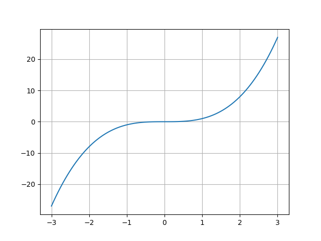
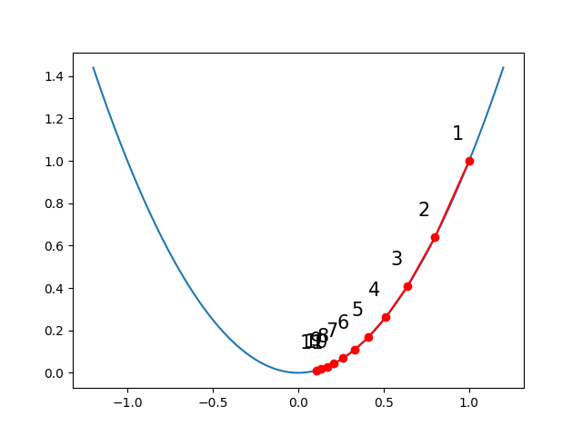
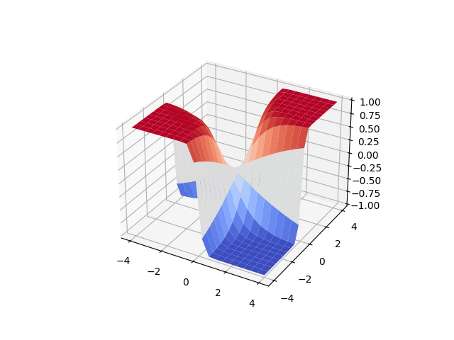

Genel Optimizasyon, Paketler, Autograd
Otomatik türevin nasıl işlediğini [1] yazısında gördük. Programlama dilinde
yazılmış, içinde if, case, hatta döngüler bile içerebilen
herhangi bir kod parçasının türevini alabilmemizi sağlayan otomatik türev
almak pek çok alanda işimize yarar. Optimizasyon alanı bunların başında
geliyor. Düşünürsek, eğer sembolik olarak türev alması çok çetrefil bir
durum varsa, tasaya gerek yok; bir fonksiyonu kodlayabildiğimiz anda onun
türevini de alabiliriz demektir.
Autograd
Çok boyutlu bir fonksiyonun gradyani ve Hessian'ı,
from autograd import grad, hessian
def objective(X):
x, y, z = X
return x**2 + y**2 + z**2
x,y,z = 1.0,1.0,1.0
h = hessian(objective, 0)
res = h(np.array([x, y, z]))
print (res)
g = grad(objective, 0)
res = g(np.array([x, y, z]))
print (res)
[[2. 0. 0.]
[0. 2. 0.]
[0. 0. 2.]]
[2. 2. 2.]
Ya da
Hessian
Mesela $f(x_1,x_2) = x_2^3 + x_2^3 + x_1^2x_2^2$ gibi bir fonksiyon var diyelim. Belli bir noktadaki Hessian
$$ H = \left[\begin{array}{rr} \frac{\partial f}{\partial x_1x_1} & \frac{\partial f}{\partial x_1x_2} \\ \frac{\partial f}{\partial x_2x_1} & \frac{\partial f}{\partial x_2x_2} \end{array}\right] $$
hesaplatmak için autograd.hessian kullanırız,
import autograd
def f(x):
x1,x2=x[0],x[1]
return x1**3 + x2**3 + (x1**2)*(x2**2)
print
xx = np.array([1.0,1.0])
h = autograd.hessian(f)
print (h(xx))
[[8. 4.]
[4. 8.]]
Şimdi bazı genel optimizasyon konularını işleyelim.
Sınırlanmamış optimizasyonda (unconstrained optimization) $f(x)$ fonksiyonunu minimum değerde tutacak $x$ değerini bulmaya uğraşıyoruz, ki $x$ tek boyutlu skalar, ya da çok boyutlu $x \in \mathbb{R}^n$ olabilir. Yani yapmaya uğraştığımız
$$ \min_x f(x) $$
işlemi. Peki minimumu nasıl tanımlarız? Bir nokta $x^\ast$ global minimize edicidir eğer tüm $x$'ler için $f(x^\ast) \le f(x)$ ise, ki $x \in \mathbb{R}^n$, en azından $x$ modelleyeni ilgilendiren tüm küme öğeleri için.
Fakat çoğu zaman bir global $f$'i kullanmak mümkün olmayabilir, fonksiyon çok çetrefil, çok boyutlu, bilinmez durumdadır, ve elimizde sadece yerel bilgi vardır. Bu durumda üstteki tanımı "bir $N$ bölgesi içinde" olacak şekilde değiştiririz ki bölge, $x^\ast$ etrafındaki, yakınındaki bölgedir.
Üstteki tanımı okuyunca $x^\ast$'in yerel minimum olup olmadığını anlamanın tek yolunun yakındaki diğer tüm noktalara teker teker bakmak olduğu anlamı çıkabilir, fakat eğer $f$ pürüzsüz bir fonksiyon ise yerel minimumu doğrulamanın çok daha hızlı bir yöntemi vardır. Hatta ve hatta eğer fonksiyon $f$ iki kez türevi alınabilir haldeyse $x^\ast$'in yerel minimum olduğunu ispatlamak daha kolaylaşır, $\nabla f(x^\ast)$ ve Hessian $\nabla^2 f(x^\ast)$'e bakarak bunu yapabiliriz.
Minimallik için 1. ve 2. derece şartlar var. 1. derece gerekli şart (ama yeterli değil) $\nabla f = 0$ olması. Bu standard Calculus'tan bildiğimiz bir şey, minimum ya da maksimumda birinci türev sıfırdır. Ama türevin sıfır olup minimum ya da maksimum olmadığı durum da olabilir, mesela $f(x) = x^3$. $f'(0) = 0$'dir fakat $x=0$ ne maksimum ne de minimumdur. Daha iyi bir termioloji $\nabla f = 0$ noktalarını {\em kritik nokta} olarak tanımlamaktır. $x=0$ noktasında bir değişim oluyor, bu değişim kritik bir değişim, her ne kadar minimum ya da maksimum olmasa da.
x = np.linspace(-3,3,100)
plt.plot(x,x**3)
plt.grid(True)
plt.savefig('func_40_autograd_01.png')

Bir kritik noktanın yerel maksimum ya da yerel minimum olup olmadığını anlamak için fonksiyonun ikinci türevine bakabiliriz. Bir $f: \mathbb{R}^n \to \mathbb{R}$ var ve $x^\ast$ noktasının kritik nokta olduğunu düşünelim, yani $\nabla f(x^\ast) = 0$. Şimdi çok ufak bir $h$ adımı için $f(x^\ast + h)$'a ne olduğuna bakalım. Burada Taylor açılımı kullanabiliriz [2],
$$ f(x + h^\ast) = f(x^\ast) + \nabla f(x^\ast) h + \frac{1}{2} h^T f(x^\ast) \nabla^2 (x^\ast) f(x^\ast) h + O(3) $$
$\nabla^2 (x^\ast)$ bir matristır içinde $f$'nin ikinci derece türevleri vardır [6]. Şimdi, kritik noktada olduğumuz için $\nabla f(x^\ast) = 0$, ve $O(3)$ terimlerini iptal edersek, üstteki
$$ f(x^\ast + h^\ast) - f(x^\ast) = \frac{1}{2} h^T \nabla^2 (x^\ast) h + O(3) $$
haline gelir. Simdi "bir noktanın mesela yerel maksimum olması" sözünü $f(x^\ast + h^\ast) - f(x^\ast) < 0$ ile ifade edebiliriz, çünkü $x^\ast$ etrafındaki tüm $x$'lerin $f$'in daha az değerlerinden olma şartını aramış oluyoruz (adım atılıyor, çıkartma yapılıyor, sonuç sıfırdan küçük). Tabii bu "tüm" söylemi yaklaşıksal, o sebeple minimumluk ifadesi yerel.
Devam edersek $f(x^\ast + h^\ast) - f(x^\ast) < 0$ olması şartı aynı zamanda $\frac{1}{2} h^T \nabla^2 (x^\ast) h < 0$ anlamına gelir, bu da $\nabla^2 (x^\ast )$ negatif kesin demektir. Çünkü $A$ simetrik bir matris olduğu zaman
$x^TAx < 0$ ise matris negatif kesin
$x^TAx \le 0$ ise matris negatif yarı-kesin (negatif semi-definite)
$x^TAx > 0$ ise matris pozitif kesin
$x^TAx \ge 0$ ise matris pozitif yarı-kesin (positive semi-definite)
Gradyan Inisi
Optimizasyonun mekaniğine gelelim. Diyelim ki basit, tek boyutlu bir $f(x) = x^2$ fonksiyonumuz var. Tek boyutlu bu ortamda bir noktadan başlayıp gradyanın (1. türev) işaret ettiği yönde ufak bir adım atmak bizi minimuma daha yaklaştırır, ve bunu ardı ardına yaparak yerel bir minimuma erisebiliriz. Örnek $f(x)$ dışbükey (convex) olduğu için bu bizi global minimuma götürür [3]. Formül
$$ x_{i+1} = x_i + \alpha \nabla f(x_i) $$
Başlangıç $x_0$ herhangi bir nokta, üstteki formülle adım ata ata ilerliyoruz, adım boyutunu bizim tanımladığımız bir $\alpha$ sabitiyle ayarlayabiliyoruz.
import autograd
def fun(x):
return x**2
def grad_desc(x, fun, alpha=0.1, max_iter=100):
xs = np.zeros(1 + max_iter)
xs[0] = x
grad = autograd.grad(fun)
for step in range(max_iter):
x = x - alpha * grad(x)
xs[step + 1] = x

return xs
alpha = 0.1
x0 = 1.
x_opt = grad_desc(x0, fun, alpha = alpha, max_iter = 10)
y_opt = fun(x_opt)
x_true = np.linspace(-1.2, 1.2, 100)
y_true = fun(x_true)
plt.plot(x_true, y_true)
plt.plot(x_opt, y_opt, 'o-', c='red')
for i, (x, y) in enumerate(zip(x_opt, y_opt), 1):
plt.text(x - 0.1, y + 0.1, i, fontsize=15)
plt.show()

Türevi autograd ile aldık, bu örnekte sembolik türev kolaydı, elle
$f'(x)=2x$ diyebilirdik ama gösterim amaçlı direk yazılımla türevi aldık.
Kısıtlanmış Optimizasyon
Mühendislik problemlerinde kısıtlanmış optimizasyon çok ortaya çıkar. Prototipik örnek bir düzlem üzerindeki orijine en yakın noktayı bulmak. Mesela düzlem $2x - y + z = 3$ olsun, ve mesafeyi minimize etmek istiyoruz, bunu $x^2+y^2+z^2$ ile hesaplayabiliriz. Yani optimizasyon problemi düzlem denklemi ile sınırlanan mesafe formülünün minimal noktasını bulmak [5].
Problemi direk scipy.optimize.minimize ile çözelim.
from scipy.optimize import minimize
def objective(X): # hedef
x, y, z = X
return x**2 + y**2 + z**2
def cons(X): # kisitlama
x, y, z = X
return 2 * x - y + z - 3
x0 = [1, 1, 1]
sol = minimize(objective, x0, constraints={'type': 'eq', 'fun': cons})
print (sol)
fun: 1.5000000035790053
jac: array([ 1.99997392, -1.00010441, 0.99994774])
message: 'Optimization terminated successfully.'
nfev: 22
nit: 4
njev: 4
status: 0
success: True
x: array([ 0.99998696, -0.50005221, 0.49997386])
Fonksiyon minimize için kısıtlamalar eq ile sıfıra eşit olma
üzerinden tanımlanır. Eğer ineq kullanılırsa sıfırdan büyük olma
tanımlanıyor o zaman mesela $x>0$ ve $x<5$ kısıtlamalarını getirmek
istersek,
cons=({'type': 'ineq','fun': lambda xvec: 5.0-xvec[1]}, # y<5
{'type': 'ineq','fun': lambda xvec: xvec[1]}) # y>0
sol = minimize(objective, x0, method = 'SLSQP', constraints=cons)
print (sol)
Not: SLSQP metotu gradyana ihtiyaç duymuyor.
fun: 1.1090612774580318e-16
jac: array([7.79817877e-12, 1.49011612e-08, 7.79860898e-12])
message: 'Optimization terminated successfully.'
nfev: 20
nit: 4
njev: 4
status: 0
success: True
x: array([-7.44668151e-09, 2.73897702e-24, -7.44668129e-09])
Bazen her şeyi kendimiz yaparak tüm adımların ne yaptığından emin olmak
isteyebiliriz. Mesela kısıtlama şartlarını kendimiz bir Lagrange çarpanı
$f(x) f(x) - \lambda g(x)$ ifadesi üzerinden tanımlayıp, türevi alıp sıfıra
eşitleyip, $f_x(x)=f_y(x)=f_z(x)=g(x)=0$ ile, elde edilen kısıtsız
optimizasyonu çözmeyi tercih edebiliriz. Türevin alınmasını direk
autograd'a yaptırırız.
import autograd.numpy as np
from autograd import grad
def F(L):
x, y, z, _lambda = L
return objective([x, y, z]) - _lambda * eq([x, y, z])
dfdL = grad(F, 0)
# Find L that returns all zeros in this function.
def obj(L):
x, y, z, _lambda = L
dFdx, dFdy, dFdz, dFdlam = dfdL(L)
return [dFdx, dFdy, dFdz, eq([x, y, z])]
from scipy.optimize import fsolve
x, y, z, _lam = fsolve(obj, [0.0, 0.0, 0.0, 1.0])
print (x,y,z)
1.0 -0.5 0.5
Aynı sonuç bulundu. Şimdi merak ediyoruz, bu sonuç gerçekten minimum mu?
Üstteki noktada Hessian'ın pozitif kesin olup olmadığını kontrol
edebiliriz. Hessian'ı da autograd hesaplar! Once gradyan,
from autograd import hessian
h = hessian(objective, 0)
res = h(np.array([x,y,z]))
print (res)
[[2. 0. 0.]
[0. 2. 0.]
[0. 0. 2.]]
Bu matris pozitif kesin, ama çıplak gözle bariz değilse, tüm özdeğerleri pozitif olup olmadığına bakabiliriz,
print (np.linalg.eig(h(np.array([x, y, z])))[0])
[2. 2. 2.]
Birden Fazla Gradyan Değişkeni
Diyelim ki elimizde
$$ g(w_1,w_2) = \tanh (w_1w_2) $$
fonksiyonu var, bu üç boyutlu bir fonksiyon, ve optimizasyon amaçlı gradyan gerekiyor, gradyanın iki değişken üzerinden alınması gerekli [7].
import autograd
from autograd import numpy as anp
def g(w_1,w_2):
return anp.tanh(w_1*w_2)
from mpl_toolkits.mplot3d import Axes3D
from matplotlib import cm
x = np.linspace(-4,4,20)
y = np.linspace(-4,4,20)
xx,yy = np.meshgrid(x,y)
zz = g(xx,yy)
fig = plt.figure()
ax = fig.gca(projection='3d')
surf = ax.plot_surface(xx, yy, zz, cmap=cm.coolwarm)
plt.savefig('func_40_autograd_03.png')

$g$'nin her iki kısmi türevini ve gradyanını,
$$ \nabla g(w_1,w_2) = \left[\begin{array}{r} \frac{\partial }{\partial w_1} g(w_1,w_2) \\ \frac{\partial }{\partial w_2} g(w_1,w_2) \end{array}\right] $$
autograd ile hesaplamak için
dgdw1 = autograd.grad(g,0)
dgdw2 = autograd.grad(g,1)
Dikkat edersek, 0 ve 1 parametreleri geçildi, bunlar sırasıyla $w_1$ ve
$w_2$ değişkenlerine tekabül ediyorlar (g tanımındaki sıralarına
göre, 0. ve 1. parametreler). Şimdi mesela (1.0,2.0) noktasındaki gradyanı
hesaplayabiliriz,
gradg = [dgdw1(1.0,2.0), dgdw2(1.0,2.0)]
print (gradg)
[0.14130164970632894, 0.07065082485316447]
Tabii çok boyutlu ortamda yazının başındaki teknikleri kullanmak daha iyi, üstteki bir seçenek.
Kaynaklar
[1] Bayramlı, Ders Notları, Otomatik Türev Almak (Automatic Differentiation -AD-)
[2] Schrimpf, http://faculty.arts.ubc.ca/pschrimpf/526/526.html
[3] Stoyanov, https://nikstoyanov.me/post/2019-04-14-numerical-optimizations
[5] Kitchin, http://kitchingroup.cheme.cmu.edu/blog/2018/11/03/Constrained-optimization-with-Lagrange-multipliers-and-autograd/
[6] Bayramlı, Cok Boyutlu Calculus, Vektör Calculus, Kurallar, Matris Türevleri
[7] Watt, Automatic Differentiation, https://jermwatt.github.io/machine_learning_refined/notes/3_First_order_methods/3_5_Automatic.html
Yukarı